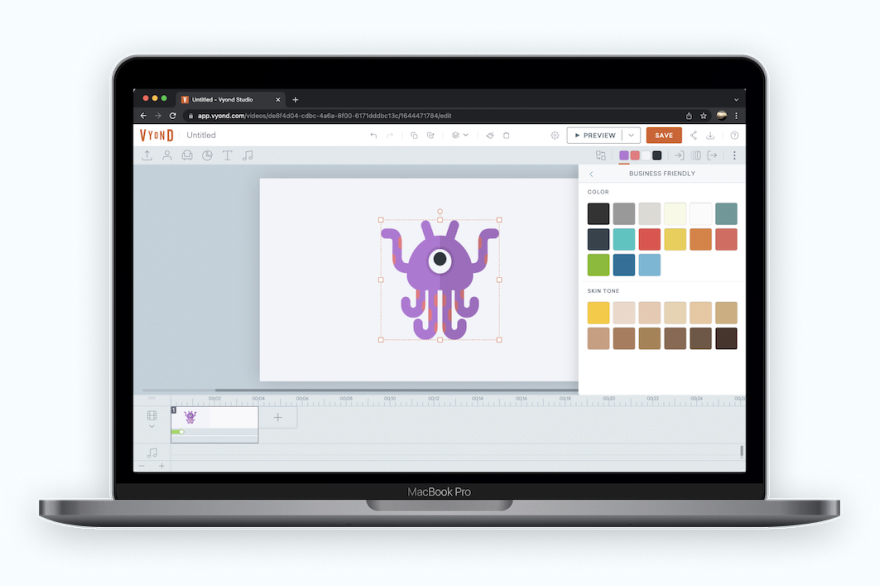
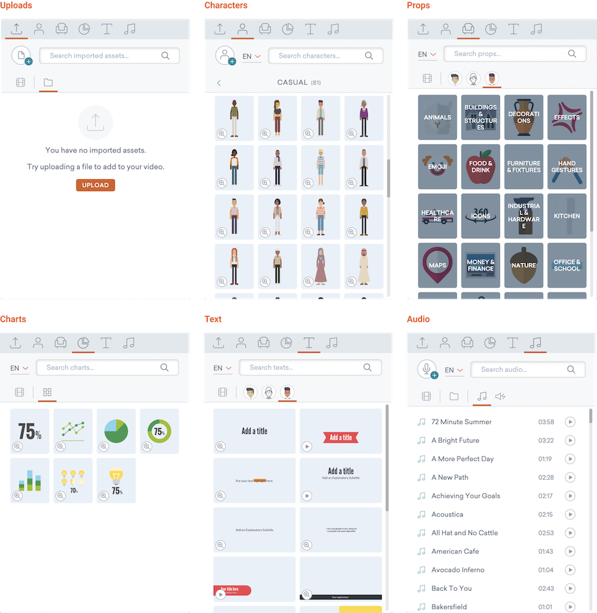
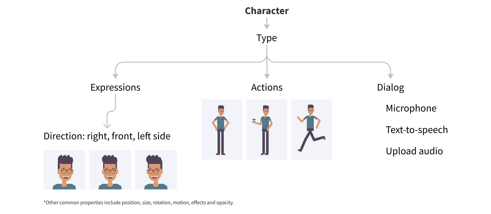
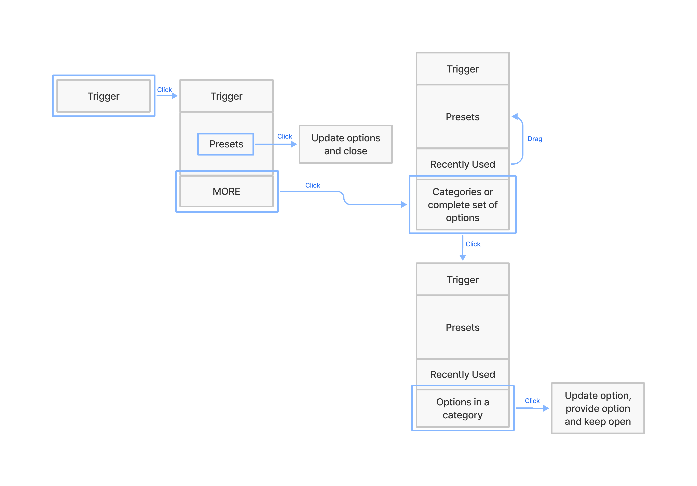

Overview
Date: 2012 - 2018
Role: Senior UX Designer
Team: Built up a small team of designers, working *closely* with engineers, product, business, marketing, sales...
Context
Vyond is a leading DIY animated video SAAS platform.
I was here as a UX Designer for about 4 years before I decided to move on. Having joined a small startup of about 20-30 people, I got the chance to experience work on a large variety of projects and tasks — I have listed some below.
Key Contributions
Creating a Consistent Browsing Experience
Context
Vyond has a huge library of assets and each asset contains many properties. The number of assets and options is overwhelming and adds a lot of mental load and friction for users.
On top of the app's library of content, users create their own characters, import content and ask us to customize assets too.
Navigation Structure
Prior to working on this project, we had a couple of problems. First, the design team was growing and each member was adding features without thinking about the experience as a whole. Second, the navigation between each asset type differed. Third, the asset thumbnails had no consistency so the UI looked cluttered.
Mapping Assets
I mapped out all the assets and it's related properties so that we could have a bird's eye view of everything on the platform. Using this map, we could visualize the complexity as well as help us organize and plan the new design.
Reusable Patterns
I created a pattern aimed at offering a consistent experience for users whenever the need to access assets or options. It follows the concept of progressive disclosure to lessen mental load.
With the pattern in place, designers can easily create a consistent user experience. Furthermore, I worked with the design team to define and approve patterns and to develop a shared understand with engineering.
Result
An example of the design pattern is shown in the short (26 secs) video clip below.
Catering for new (exploring), intermediate (making animation) and advanced users (optimizing workflow) to browse, apply, save and re-use colors.